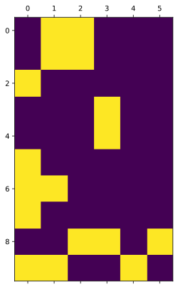

How pysubgroup works¶
just ignore the following code block for non technical people, but have a look at the example dataFrame (table) that we created
[1]:
import pysubgroup as ps
import pandas as pd
pd.set_option('display.width', 1000)
pd.set_option('display.max_colwidth', 300)
products = ['toast', 'bread', 'bread', 'toast', 'bread', 'bread','toast', 'bread', 'bread', 'pizza']
amount = [100,1000,100,1000,10000,540,750,860,350,400]
was_fraud = [1,0,0,0,1,1,1,0,0,0]
day_of_month = [15,20,30,17,12,7,11,14,20,27]
is_gold = [1,0,1,0,0,0,1,1,1,0]
df = pd.DataFrame.from_dict({'product': products, 'was_fraud': was_fraud, 'amount': amount, 'day_of_month' : day_of_month, 'is_gold':is_gold})
df
[1]:
| product | was_fraud | amount | day_of_month | is_gold | |
|---|---|---|---|---|---|
| 0 | toast | 1 | 100 | 15 | 1 |
| 1 | bread | 0 | 1000 | 20 | 0 |
| 2 | bread | 0 | 100 | 30 | 1 |
| 3 | toast | 0 | 1000 | 17 | 0 |
| 4 | bread | 1 | 10000 | 12 | 0 |
| 5 | bread | 1 | 540 | 7 | 0 |
| 6 | toast | 1 | 750 | 11 | 1 |
| 7 | bread | 0 | 860 | 14 | 1 |
| 8 | bread | 0 | 350 | 20 | 1 |
| 9 | pizza | 0 | 400 | 27 | 0 |
[2]:
target = ps.BinaryTarget('was_fraud', 1) # we are looking for fraud=1
search_space = ps.create_selectors(df, ignore='was_fraud') # define what we are looking for
search_space
[2]:
[product=='toast',
product=='bread',
product=='pizza',
amount<350,
amount: [350:540[,
amount: [540:860[,
amount: [860:1000[,
amount>=1000,
day_of_month<12,
day_of_month: [12:15[,
day_of_month: [15:20[,
day_of_month: [20:27[,
day_of_month>=27,
is_gold==0,
is_gold==1]
As you can see, pysubgroup created selectors for us, treating nominal columns (product, is_gold) different from numeric columns (where it uses intervals selectors) you can also create your own selectors see below
[3]:
my_selector = ps.IntervalSelector('amount', 500, 25000)
print(my_selector)
search_space.append(my_selector) # add my selector to searchspace
amount: [500:25000[
Now that we have defined where we want to search we write all that information into a task object:
[4]:
quality_function = ps.StandardQF(0) # Looks for subgroups with highest true positives ratio
min_quality = 0.2 # Minimum required quality = min true positive ratio
task = ps.SubgroupDiscoveryTask(df, target, search_space, quality_function, result_set_size=10, depth=3, min_quality=min_quality)
now that we have that task object we can run the algorithm (Here Depth first search)
[5]:
result = ps.SimpleDFS().execute(task) # Run the algorithm
result.to_dataframe(include_info=True) # Show the output
[5]:
| quality | description | size_sg | size_dataset | positives_sg | positives_dataset | size_complement | relative_size_sg | relative_size_complement | coverage_sg | coverage_complement | target_share_sg | target_share_complement | target_share_dataset | lift | |
|---|---|---|---|---|---|---|---|---|---|---|---|---|---|---|---|
| 0 | 0.6 | amount: [500:25000[ AND amount: [540:860[ AND product=='toast' | 1 | 10 | 1 | 4 | 9 | 0.1 | 0.9 | 0.25 | 0.75 | 1.0 | 0.333333 | 0.4 | 2.5 |
| 1 | 0.6 | amount: [500:25000[ AND day_of_month<12 AND product=='toast' | 1 | 10 | 1 | 4 | 9 | 0.1 | 0.9 | 0.25 | 0.75 | 1.0 | 0.333333 | 0.4 | 2.5 |
| 2 | 0.6 | amount: [540:860[ AND day_of_month<12 AND product=='toast' | 1 | 10 | 1 | 4 | 9 | 0.1 | 0.9 | 0.25 | 0.75 | 1.0 | 0.333333 | 0.4 | 2.5 |
| 3 | 0.6 | amount<350 AND product=='toast' | 1 | 10 | 1 | 4 | 9 | 0.1 | 0.9 | 0.25 | 0.75 | 1.0 | 0.333333 | 0.4 | 2.5 |
| 4 | 0.6 | amount: [540:860[ AND product=='toast' | 1 | 10 | 1 | 4 | 9 | 0.1 | 0.9 | 0.25 | 0.75 | 1.0 | 0.333333 | 0.4 | 2.5 |
| 5 | 0.6 | amount<350 AND day_of_month: [15:20[ AND product=='toast' | 1 | 10 | 1 | 4 | 9 | 0.1 | 0.9 | 0.25 | 0.75 | 1.0 | 0.333333 | 0.4 | 2.5 |
| 6 | 0.6 | amount: [540:860[ AND is_gold==1 AND product=='toast' | 1 | 10 | 1 | 4 | 9 | 0.1 | 0.9 | 0.25 | 0.75 | 1.0 | 0.333333 | 0.4 | 2.5 |
| 7 | 0.6 | day_of_month<12 AND is_gold==1 AND product=='toast' | 1 | 10 | 1 | 4 | 9 | 0.1 | 0.9 | 0.25 | 0.75 | 1.0 | 0.333333 | 0.4 | 2.5 |
| 8 | 0.6 | day_of_month<12 AND product=='toast' | 1 | 10 | 1 | 4 | 9 | 0.1 | 0.9 | 0.25 | 0.75 | 1.0 | 0.333333 | 0.4 | 2.5 |
| 9 | 0.6 | amount<350 AND is_gold==1 AND product=='toast' | 1 | 10 | 1 | 4 | 9 | 0.1 | 0.9 | 0.25 | 0.75 | 1.0 | 0.333333 | 0.4 | 2.5 |
[6]:
# Visualize resultset, see there is quite some redundancy
import matplotlib.pyplot as plt
plt.matshow(result.supportSetVisualization())
Discarding 8 entities that are not covered
[6]:
<matplotlib.image.AxesImage at 0x2c8420d7b48>
[7]:
# we can already avoid redundancy a little but its quite slow!
quality_function = ps.GeneralizationAwareQF(ps.StandardQF(0)) # Looks for subgroups with highest true positives ratio, trying to avoid redundancy
task = ps.SubgroupDiscoveryTask(df, target, search_space, quality_function, result_set_size=10, depth=3, min_quality=min_quality)
result = ps.SimpleDFS().execute(task)
plt.matshow(result.supportSetVisualization())
Discarding 4 entities that are not covered
[7]:
<matplotlib.image.AxesImage at 0x2c84212da48>

[8]:
result.to_dataframe(include_info=True) # Show the output, avoiding redundancy
[8]:
| quality | description | size_sg | size_dataset | positives_sg | positives_dataset | size_complement | relative_size_sg | relative_size_complement | coverage_sg | coverage_complement | target_share_sg | target_share_complement | target_share_dataset | lift | |
|---|---|---|---|---|---|---|---|---|---|---|---|---|---|---|---|
| 0 | 0.600000 | amount: [540:860[ | 2 | 10 | 2 | 4 | 8 | 0.2 | 0.8 | 0.50 | 0.50 | 1.000000 | 0.250000 | 0.4 | 2.500000 |
| 1 | 0.600000 | day_of_month<12 | 2 | 10 | 2 | 4 | 8 | 0.2 | 0.8 | 0.50 | 0.50 | 1.000000 | 0.250000 | 0.4 | 2.500000 |
| 2 | 0.500000 | amount<350 AND day_of_month: [15:20[ | 1 | 10 | 1 | 4 | 9 | 0.1 | 0.9 | 0.25 | 0.75 | 1.000000 | 0.333333 | 0.4 | 2.500000 |
| 3 | 0.500000 | amount>=1000 AND day_of_month: [12:15[ | 1 | 10 | 1 | 4 | 9 | 0.1 | 0.9 | 0.25 | 0.75 | 1.000000 | 0.333333 | 0.4 | 2.500000 |
| 4 | 0.500000 | day_of_month: [12:15[ AND is_gold==0 | 1 | 10 | 1 | 4 | 9 | 0.1 | 0.9 | 0.25 | 0.75 | 1.000000 | 0.333333 | 0.4 | 2.500000 |
| 5 | 0.500000 | day_of_month: [15:20[ AND is_gold==1 | 1 | 10 | 1 | 4 | 9 | 0.1 | 0.9 | 0.25 | 0.75 | 1.000000 | 0.333333 | 0.4 | 2.500000 |
| 6 | 0.333333 | is_gold==1 AND product=='toast' | 2 | 10 | 2 | 4 | 8 | 0.2 | 0.8 | 0.50 | 0.50 | 1.000000 | 0.250000 | 0.4 | 2.500000 |
| 7 | 0.333333 | amount<350 AND product=='toast' | 1 | 10 | 1 | 4 | 9 | 0.1 | 0.9 | 0.25 | 0.75 | 1.000000 | 0.333333 | 0.4 | 2.500000 |
| 8 | 0.266667 | is_gold==0 AND product=='bread' | 3 | 10 | 2 | 4 | 7 | 0.3 | 0.7 | 0.50 | 0.50 | 0.666667 | 0.285714 | 0.4 | 1.666667 |
| 9 | 0.266667 | product=='toast' | 3 | 10 | 2 | 4 | 7 | 0.3 | 0.7 | 0.50 | 0.50 | 0.666667 | 0.285714 | 0.4 | 1.666667 |
[ ]: